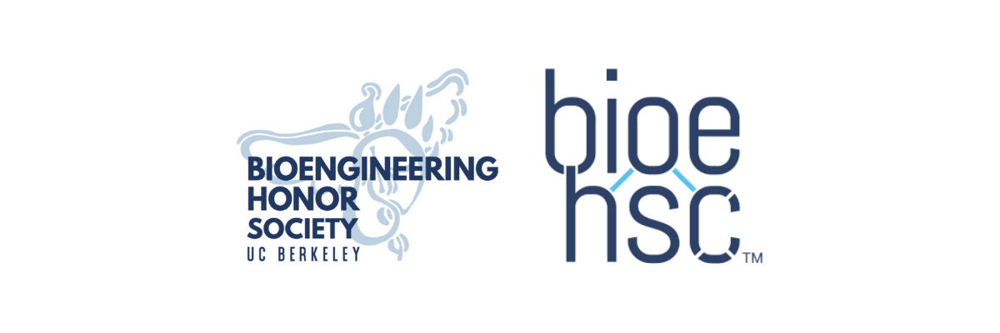
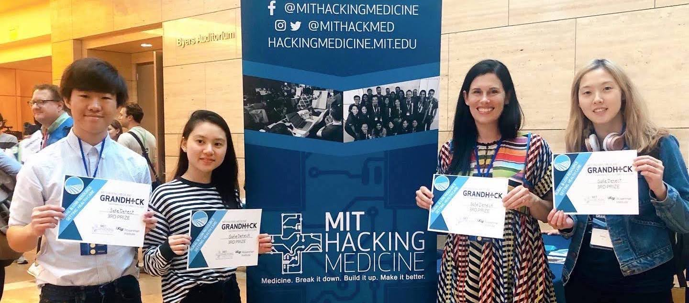

About Me
Hi! I'm Richard (he/him/his). I'm an undergrad at UC Berkeley majoring in Bioengineering (Cell & Tissue Engineering concentration) and I'm aiming to attend medical school in the future.
I'm deeply passionate about research in disease pathogenesis and regenerative medicine, and I've been involved in projects ranging from developing new glioblastoma treatments to understanding DENV NS1-mediated vascular leak. I've held positions at UC Berkeley, UCSF, CHORI, and USC.
I'm also inspired by good UI/UX design, specifically when it helps bring people closer to information about their health. This drives my entrepreneurial interests, and I'm working on developing tools to help connect LGBTQIA+ individuals and members of other marginalized communities to the medical resources they need.
School

University of California, Berkeley
B.S. Bioengineering (Cell & Tissue Engineering)
Class of 2022
Coursework
Honors and Awards
Extracurriculars

Coursework
University of California, Berkeley
Bioengineering Courses
- BioE C131 - Intro to Computational Molecular and Cell Biology
- BioE 114/115 - Cell and Tissue Engineering
- BioE 104 - Biological Mass Transport Phenomena
- BioE 103/11 - Engineering Molecules
- BioE 100 - Ethics in Science and Engineering
Computational / Math Courses
- Data 100 - Data Science (NumPy, Pandas, Scikit-Learn, Plotly, Matplotlib, Seaborn)
- CS 61A - Intro to Programming (Python/SQL/Scheme/Python Libraries)
- Math 54 - Linear Algebra and Differential Equations
Premed Courses
- Bio 1A/1AL/1B - General Biology
- Chem 1A/1AL - General Chemistry
- Chem 3A/3AL/3B/3BL - Organic Chemistry
- Chem 135 - Biochemistry
- Phys 7A/7B - Engineering Physics
- Stat 20 - Statistics and Probability (R)
- Psych 1 - Intro to Psychology
- Socio 1 - Intro to Sociology
- Anthro R5B - Eschaton
- Italian R5A - Italian Literature: Walking in the City
Other Courses
- IntegBi 131 - Human Anatomy
- MCB 141 - Developmental Biology
- IntegBi 35AC - Human Biological Variation
- MCB 32 - Intro to Human Physiology
- MSE 45 - Properties of Materials
- Math 53 - Multivariable Calculus
- UGBA 198 - Berkeley Skydeck DeCal
Honors and Awards
- Intersect - A Human-Centered Design-a-thon (Berkeley Innovation x RKS Design)
First Place - April 2021
- Haas Scholars - Funding for Summer Research and Honors Thesis Work
March 2021
- SURF Rose Hills Experience Recipient
March 2021
- HackCOVID (Tech Tree Root x Devpost)
Give-the-people-what-they-want Prize - 2020
- Pandemic Response Hackathon (Datavant)
Second-order Societal Impacts Honorable Mention - 2020
- COVID Hacks
First Place - 2020
- NIH STIMULUS Grant (Children's Hospital Oakland Research Institute SSRP)
March 2020
- San Francisco Grand Hack (MIT Hacking Medicine x UCSF)
Rural and Underserved Communities Health Track Third Place - October 2019
- Milken Scholarship (Milken Scholars)
July 2018
- STEM Excellence Scholarship (Exxon-Mobil)
June 2018
- Torrance PTSA Scholarship (City of Torrance)
June 2018
- Regents' and Chancellor's Scholarship (University of California, Berkeley)
May 2018
- The President's Volunteer Service Award
Gold Level - 2015, 2016, 2017, 2018
- Torrance Volunteer Service Award (City of Torrance)
March 2016
Work
My Passions
When I'm not being crushed underneath the weight of my work, I love creating new tools in Notion, managing website content, practicing a new Ghibli piece on the piano, updating my restaurant database, mentoring my former Science Olympiad team, sampling new coffee, testing my ideas in health hackathons, and folding new origami!


Contact
Site Design: HTML5 UP